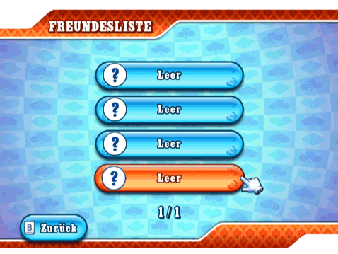
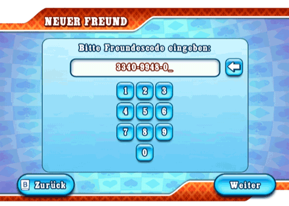

23 |
Freunde |
 |
Dein Freundescode wird im Menü "Spiel erstellen" angezeigt. Du kannst ihn deinen Freunden per Telefon, E-Mail oder Internet mitteilen. Freundesliste  Die Freundesliste hat zwei Funktionen. Zum Einen bietet sie dir eine Übersicht über deine Freunde und ihren jeweiligen Online-Status. Zum Zweiten dient sie dazu, einem Spiel mit deinen Freunden beizutreten. Wenn du in einem Spiel Freunde gefunden hast, kannst du deinen Freunden folgen und deren Spielen der Kategorien "Weltweit" und "Freunde" beitreten, vorausgesetzt, dass dort ein Platz am Tisch frei ist. Damit zwei Spieler Freunde werden können, müssen beide im Menü "Neuer Freund" den Freundescode des anderen eingeben. Solange nicht beide Spieler den Code eingegeben haben, werden der Online-Status und der Online-Name des anderen nicht angezeigt und nur sein Freundescode erscheint. Online-Status
Dein Freund befindet sich gerade in einem Spiel, dem du beitreten kannst. Wähle ihn einfach in deiner Freundesliste.
Dein Freund ist online, aber gerade nicht in einer Partie.
Dein Freund ist online und in einer Partie, aber du kannst seinem Spiel nicht beitreten. Wenn kein Smiley angezeigt ist, ist dein Freund offline. Wähle dieses Feld, um einen Freund aus der Liste zu löschen. Neuer Freund  Hier gibst du Freundescodes ein. Dein Freund muss auf seiner Wii-Konsole das gleiche tun, dann seid ihr bereit zum Spielen. |


 |
 |
 |